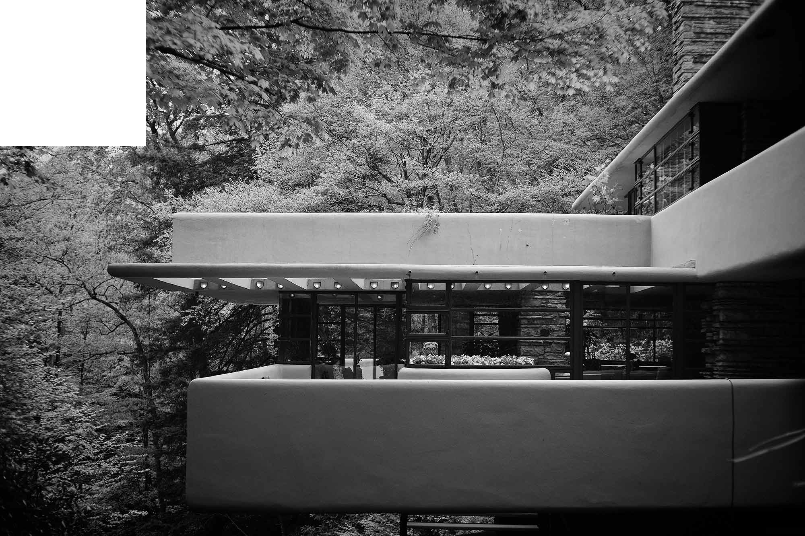
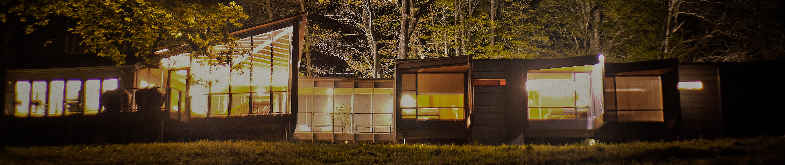
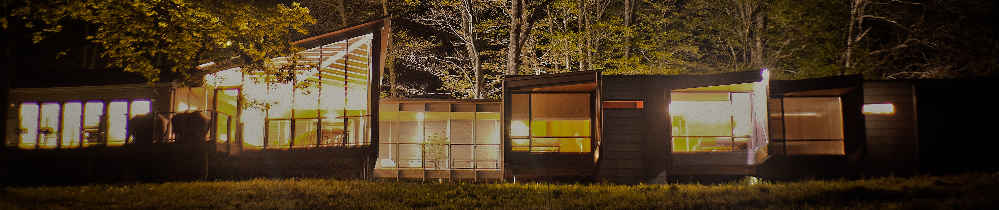
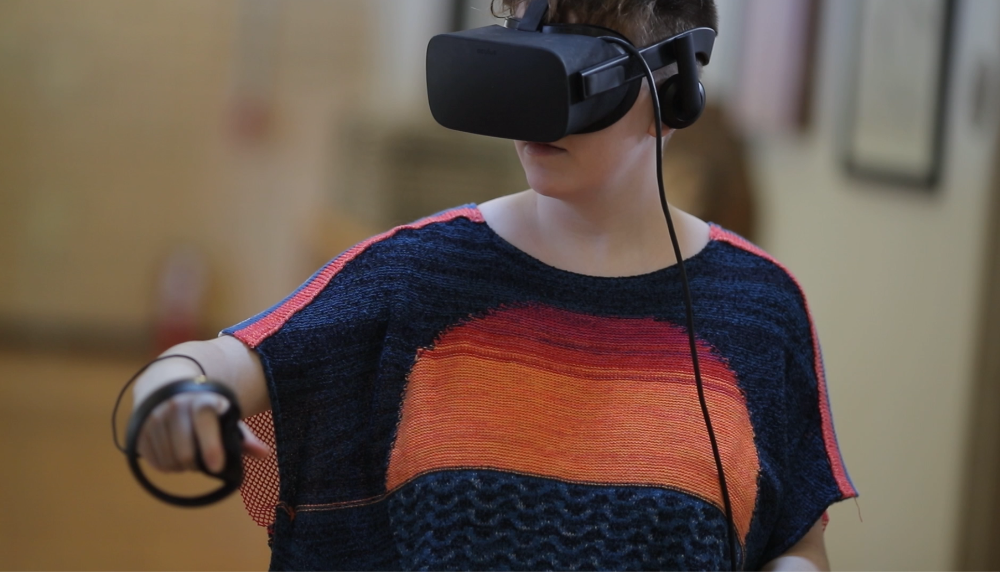
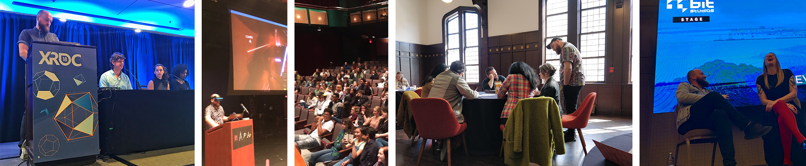

Building an inclusive, weird, and fun future
01. Doug North Cook
It's me! Hi!
I am a designer, educator, and artist interested in how technology can make us more human. Most of my current work explores immersive technology, embodiment, emotion, and designing for the senses.
I was the founding faculty member for the Immersive Media program at Chatham University where I developed the program curriculum, conducted research, and worked with amazing students to explore immersive technology, push boundaries, engage responsibly, and challenge established systems.
In the last several years I have worked on projects with Fallingwater, Facebook & Oculus and now Meta, The National Science Foundation, IEEE, Commnunity College of Allegheny County, among others, and most recently took the role of Head of VR at Robot Teddy.
I am constantly looking for new ways to create meaningful experiences that are available and accessible to everyone. If you are working on accessible tools, universal design, weird VR art, AR educational apps, innovative furniture; things at the intersection of design, art, and immersive technology - I'd like to hear about it. You can find me easily on twitter email works too
This page is mostly a place for me to catalog projects, writing, talks, and share the occasional oddity.

Working with the Fallingwater Institute, we developed a unique residency experience for professionals working in immersive technology. The Fallingwater Immersive Design Residency brings together designers, developers, and producers from all over the world for a week-long offline experience exploring Fallingwater, architectural theory, multi-sensory design, and more, all while living in a spectacular dwelling on the top of the mountain - a place called High Meadow.

the terraces in the woods at fallingwater
02. IMMERSIVE DESIGN AT FALLINGWATER
Working with the Fallingwater Institute, we developed a unique residency experience for professionals working in immersive technology. The Fallingwater Immersive Design Residency brings together designers, developers, and producers from all over the world for a week-long offline experience exploring Fallingwater, architectural theory, multi-sensory design, and more, all while living in a spectacular dwelling on the top of the mountain - a place called High Meadow.

the house at High Meadow
fallingwater immersive convening
In the fall of 2018, we invited a group of people working at different corners of immersive technology; researchers, designers, founders, and developers to have a series of structured conversations about difficult issues in the industry. These conversations were framed under the question "How do we make VR something that is for everyone?"
After the Convening at Fallingwater we debated about the proper way to document some of our discussions, make available a bit of our learnings, and commemorate our time. Robin Hunicke and I worked with the incredible Gage Lindsten to produce the first Fallingwater Convening Zine. We spent a long weekend in the woods near Fallingwater working with Gage to capture the optimistic tone set in some of conversations and imagine a positive future built with immersive technology at its core. You can find the zine at the Fallingwater Museum Store.
After the Convening at Fallingwater we debated about the proper way to document some of our discussions, make available a bit of our learnings, and commemorate our time. Robin Hunicke and I worked with the incredible Gage Lindsten to produce the first Fallingwater Convening Zine. We spent a long weekend in the woods near Fallingwater working with Gage to capture the optimistic tone set in some of conversations and imagine a positive future built with immersive technology at its core. You can find the zine at the Fallingwater Museum Store.

Watch as I ramble my way through a very early conversation about this program with Kent Bye
chatham university student working in vr
03. IMMERSIVE MEDIA PROGRAM AT CHATHAM UNIVERSITY
Chatham University is a special place. This year we celebrate our 150th anniversary and our 5th as a fully gender inclusive institution after 145 years of being a historic women's institution. We believe that all people should be afforded respect, regard, and be invited to participate in the industries that will change what it means to be human. That's why we started our Immersive Media program at Chatham: to create an inclusive future. I am proud of the work we have accomplished in these past few years and we're just getting started.
The development for the Immersive Media program at Chatham University started in 2015 as the result of a conversation between me and Kyra Tucker, the director of our Interior Architecture program, about using VR for architectural visualization. Those discussions led to a collaborative effort between multiple departments and faculty to develop one of the first undergraduate programs focused exclusively on creating content for immersive platforms. We successfully launched the program in fall of 2019 with an excited first cohort!
The University was awarded an incredibly generous $1 Million dollar grant from the McElhattan Foundation in order to support the founding of the Immersive Media Program.
Watch as I ramble my way through a very early conversation about this program with Kent Bye
Talking with @dougnorthcook about starting a 4-year Bachelor's degree in immersive media at @ChathamU https://t.co/W7ARPu7vvM
— Kent Bye VoicesOfVR (@kentbye) March 20, 2018

Here are a few of my favorite talks, panels, workshops, and articles from the last few years. If you'd like to talk having me at your conference or event please reach out. I am also always happy to refer you to colleagues and peers who may be a better fit.